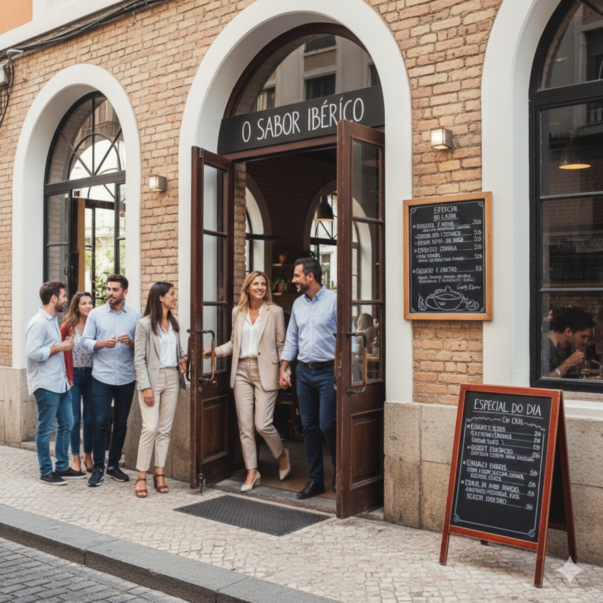
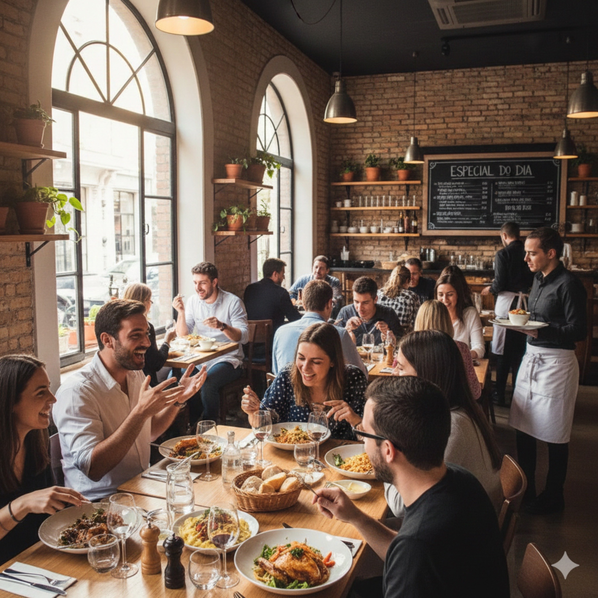
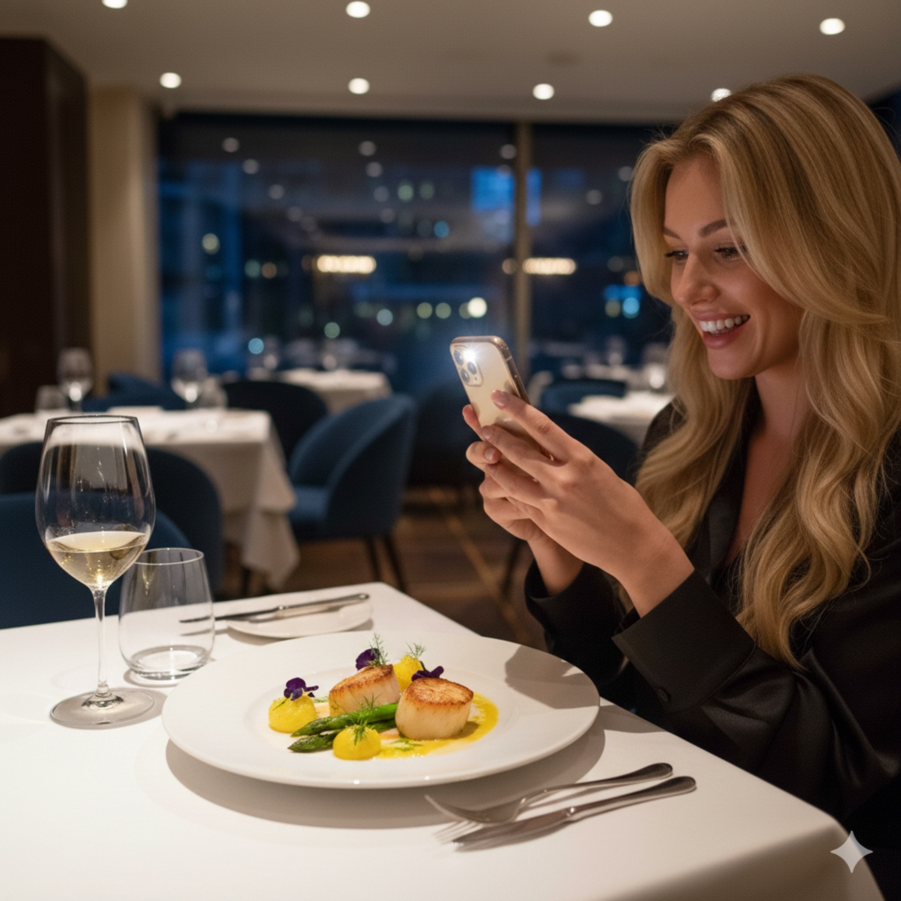
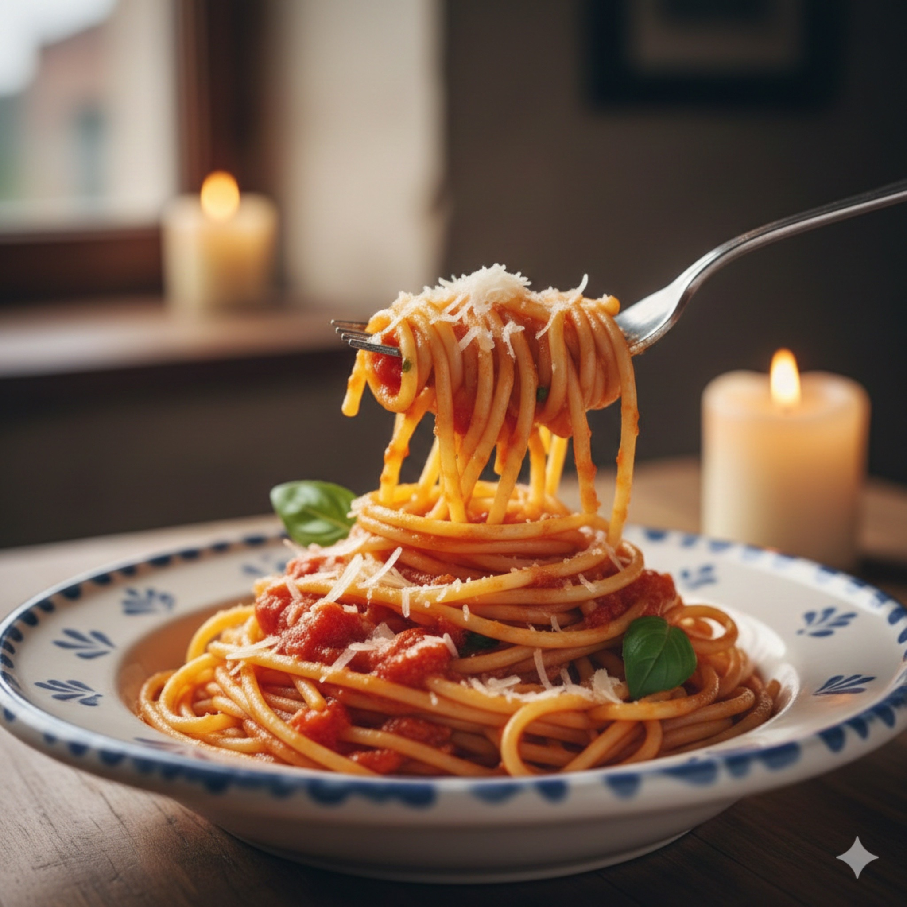
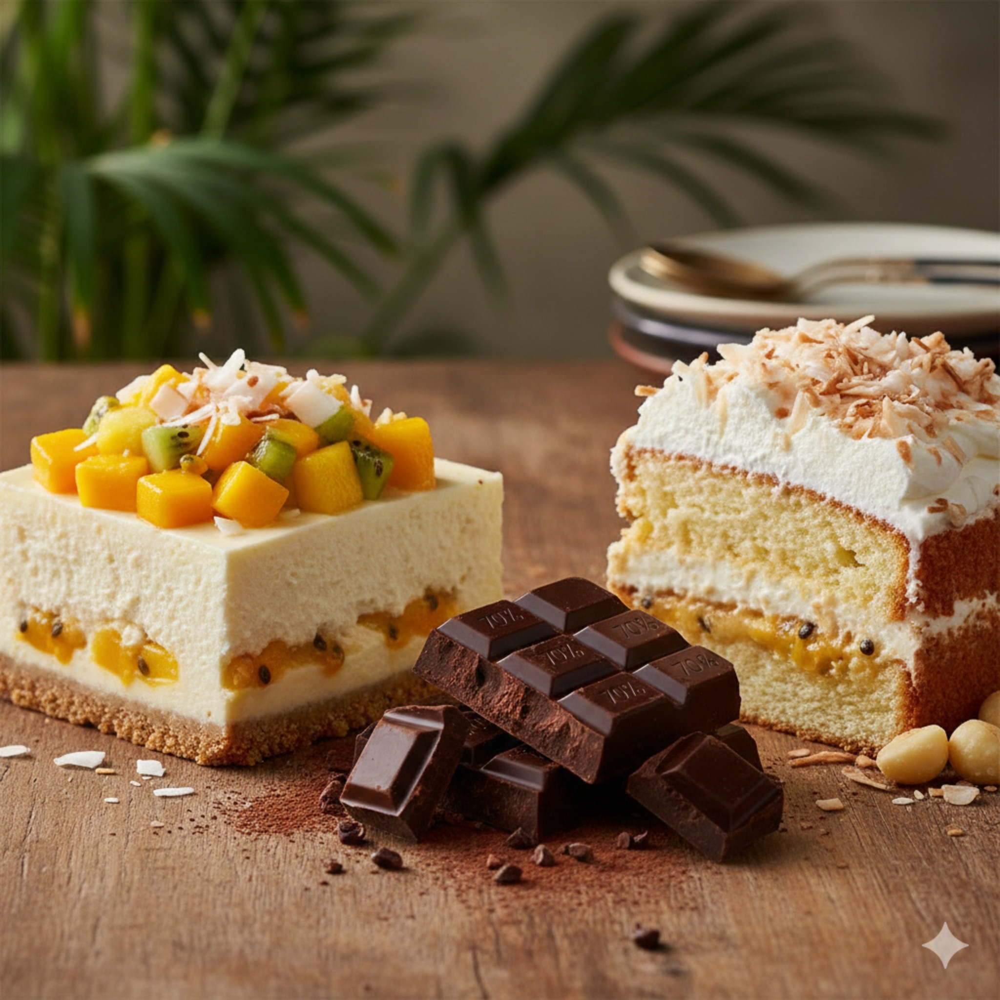
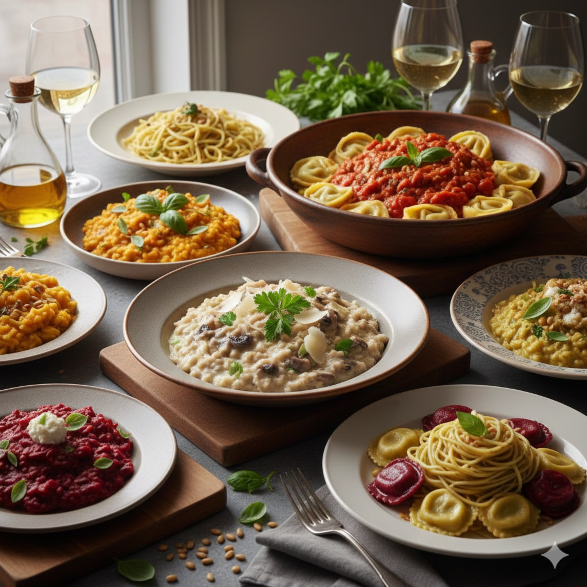
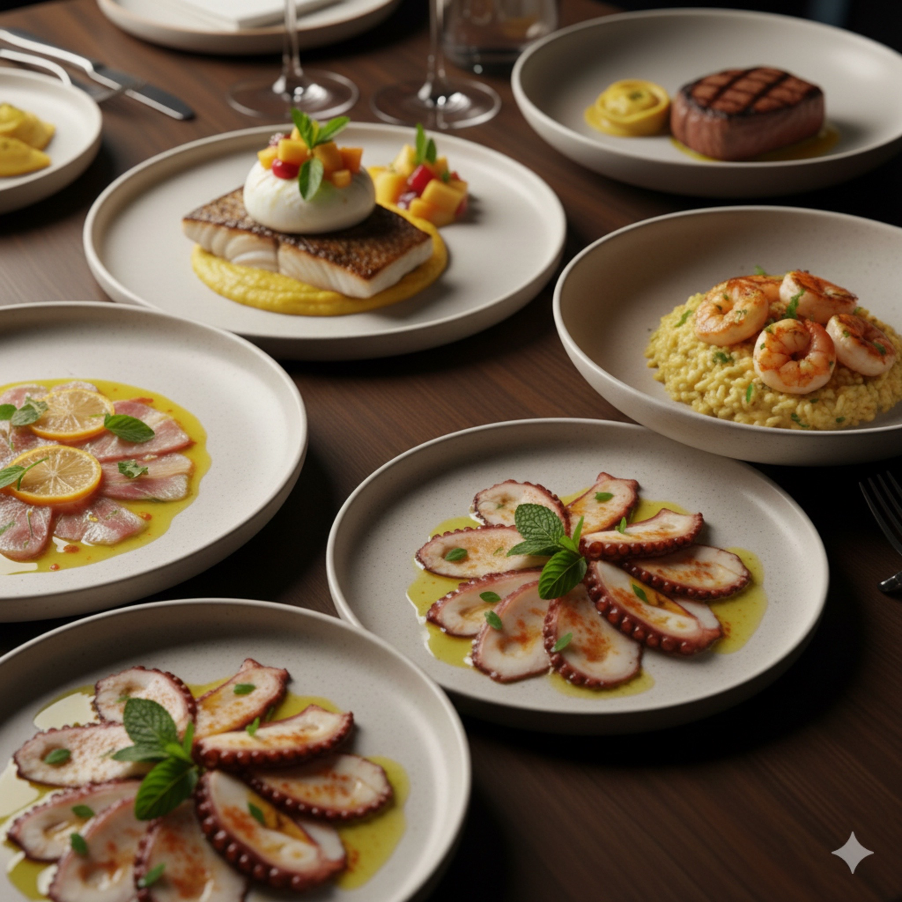

01
Pouca visibilidade local
O restaurante existe, mas não aparece com força para quem está perto.
A Wollan constrói uma presença digital estratégica para restaurantes, usando anúncios, posicionamento e criativos que colocam sua marca na frente das pessoas certas.


Antes da reserva, existe uma decisão.O cliente vê, pesquisa, compara e escolhe.
Não basta ter boa comida, bom ambiente e bom atendimento se as pessoas certas ainda não estão descobrindo, lembrando e escolhendo o seu restaurante.

O restaurante existe, mas não aparece com força para quem está perto.

Comida boa precisa ser apresentada de um jeito que desperte vontade.
O cliente não compra só comida. Ele compra ambiente, sensação e momento.

Postar por postar não cria previsibilidade de procura e movimento.

Nós posicionamos o restaurante no caminho da decisão: quando o cliente sente vontade, pesquisa opções, compara lugares e decide onde vai comer.
A Wollan une estratégia, tráfego, criativos e acompanhamento para transformar atenção em oportunidade real para o restaurante.
Campanhas em Google Ads e Meta Ads para alcançar clientes em momentos diferentes da decisão.
Anúncios com chamadas, imagens e argumentos pensados para despertar vontade de conhecer.
Comunicação voltada para pessoas próximas, com maior chance de visitar, reservar ou pedir.
Análise dos resultados, ajustes de campanha e decisões guiadas por dados.
Antes de experimentar a comida, o cliente experimenta a percepção da marca. Um bom posicionamento faz o restaurante parecer mais confiável, desejável e memorável.

O objetivo é construir presença, entender o público, melhorar campanhas e criar um caminho mais previsível para atrair clientes.
Dependem de estratégia, constância e execução. Se o restaurante já tem boa comida, boa estrutura e vontade de crescer, o próximo passo é colocar essa experiência na frente das pessoas certas.
Falar com a Wollan no WhatsApp →